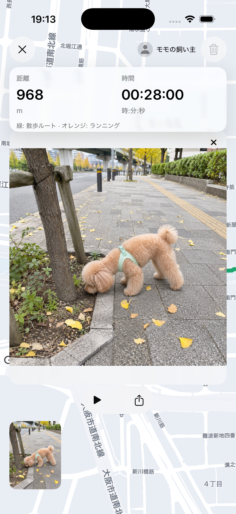
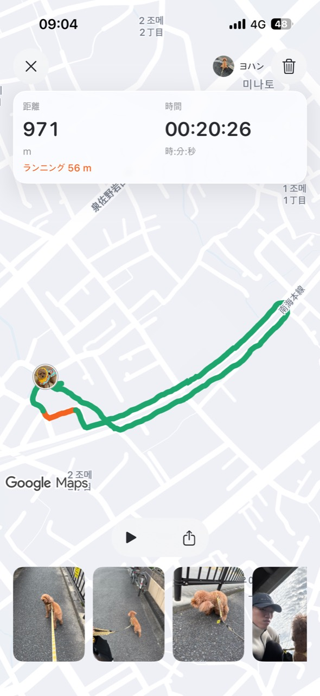
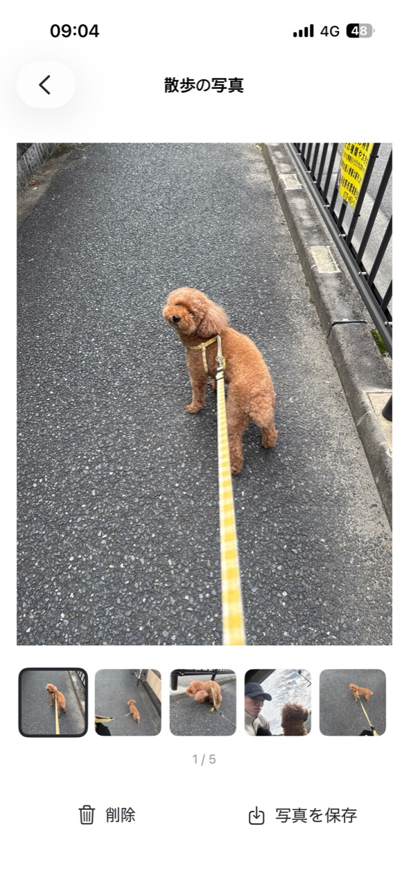

飼い主のプロフィールを見つけやすく
テストでは、犬のプロフィールアイコンを自分のものと間違えて変更したユーザーがいました。
改善案では、家族情報から自分のプロフィールを開けるようにしました。


ユーザーテスト：参加者2名 ／ 改善案は未実装
02 / 03 iOS app
ワングラム
ルートと写真を記録し、家族があとから見返せるiOSアプリです。


離れて暮らす家族にも、散歩の様子を見てもらいたくて、ワングラムを作り始めました。


地図上で散歩のルートと写真を時間順に再生し、
距離や時間も確認できます。




テストでは、犬のプロフィールアイコンを自分のものと間違えて変更したユーザーがいました。
改善案では、家族情報から自分のプロフィールを開けるようにしました。
ユーザーテスト：参加者2名 ／ 改善案は未実装
写真が撮れたか分かりにくく、散歩中の確認も難しい状態でした。
撮った写真を小さく表示し、タップすると全画面で見られるようにしました。


テストをもとにプロフィールへの入口を見直し、
撮影直後の写真も確認しやすくしました。
予定や地図も載せる案から、散歩の開始と記録の確認に絞りました。


ロック画面とDynamic Islandに表示し、タップで散歩画面に戻れます。


手描き風の見た目と自然な体のバランスを指定し、AIで作りました。


散歩の距離・写真と、予防接種やトリミングの予定を同じ画面に載せました。